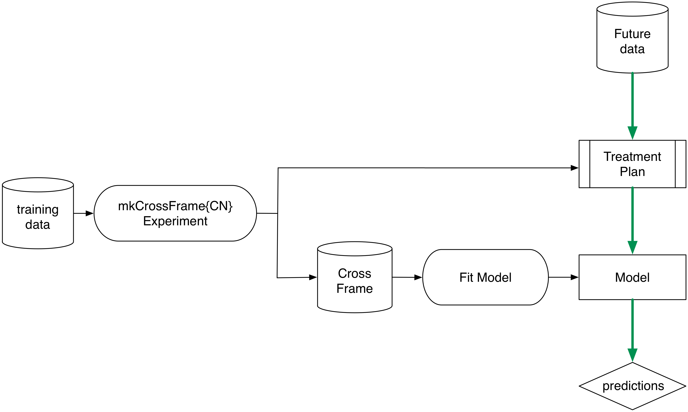

vtreat cross frames
John Mount, Nina Zumel
2019-07-30
Source:vignettes/vtreatCrossFrames.Rmd
vtreatCrossFrames.RmdExample demonstrating “cross validated training frames” (or “cross frames”) in vtreat.
Consider the following data frame. The outcome only depends on the “good” variables, not on the (high degree of freedom) “bad” variables. Modeling such a data set runs a high risk of over-fit.
set.seed(22626)
mkData <- function(n) {
d <- data.frame(xBad1=sample(paste('level',1:1000,sep=''),n,replace=TRUE),
xBad2=sample(paste('level',1:1000,sep=''),n,replace=TRUE),
xBad3=sample(paste('level',1:1000,sep=''),n,replace=TRUE),
xGood1=rnorm(n),
xGood2=rnorm(n))
# outcome only depends on "good" variables
d$y <- rnorm(nrow(d))+0.2*d$xGood1 + 0.3*d$xGood2>0.5
# the random group used for splitting the data set, not a variable.
d$rgroup <- sample(c("cal","train","test"),nrow(d),replace=TRUE)
d
}
d <- mkData(2000)
# devtools::install_github("WinVector/WVPlots")
# library('WVPlots')
plotRes <- function(d,predName,yName,title) {
print(title)
tab <- table(truth=d[[yName]],pred=d[[predName]]>0.5)
print(tab)
diag <- sum(vapply(seq_len(min(dim(tab))),
function(i) tab[i,i],numeric(1)))
acc <- diag/sum(tab)
# if(requireNamespace("WVPlots",quietly=TRUE)) {
# print(WVPlots::ROCPlot(d,predName,yName,title))
# }
print(paste('accuracy',acc))
}The Wrong Way
Bad practice: use the same set of data to prepare variable encoding and train a model.
dTrain <- d[d$rgroup!='test',,drop=FALSE]
dTest <- d[d$rgroup=='test',,drop=FALSE]
treatments <- vtreat::designTreatmentsC(dTrain,c('xBad1','xBad2','xBad3','xGood1','xGood2'),
'y',TRUE,
rareCount=0 # Note: usually want rareCount>0, setting to zero to illustrate problem
)## [1] "vtreat 1.4.4 inspecting inputs Tue Jul 30 13:21:59 2019"
## [1] "designing treatments Tue Jul 30 13:21:59 2019"
## [1] " have initial level statistics Tue Jul 30 13:21:59 2019"
## [1] " scoring treatments Tue Jul 30 13:21:59 2019"
## [1] "have treatment plan Tue Jul 30 13:21:59 2019"
## [1] "rescoring complex variables Tue Jul 30 13:21:59 2019"
## [1] "done rescoring complex variables Tue Jul 30 13:21:59 2019"dTrainTreated <- vtreat::prepare(treatments,dTrain,
pruneSig=c() # Note: usually want pruneSig to be a small fraction, setting to null to illustrate problems
)
f <- wrapr::mk_formula("y", treatments$scoreFrame$varName)
print(f)## y ~ xBad1_catP + xBad1_catB + xBad2_catP + xBad2_catB + xBad3_catP +
## xBad3_catB + xGood1 + xGood2
## <environment: base>## Warning: glm.fit: fitted probabilities numerically 0 or 1 occurred##
## Call:
## glm(formula = f, family = binomial(link = "logit"), data = dTrainTreated)
##
## Deviance Residuals:
## Min 1Q Median 3Q Max
## -2.258 0.000 0.000 0.000 1.970
##
## Coefficients:
## Estimate Std. Error z value Pr(>|z|)
## (Intercept) -6.5366 2.4568 -2.661 0.007801 **
## xBad1_catP 1168.1918 645.3595 1.810 0.070274 .
## xBad1_catB 1.8573 0.7867 2.361 0.018228 *
## xBad2_catP 167.4370 389.0529 0.430 0.666926
## xBad2_catB 1.4484 0.5456 2.655 0.007936 **
## xBad3_catP 545.7586 453.9221 1.202 0.229240
## xBad3_catB 2.5985 0.6799 3.822 0.000133 ***
## xGood1 0.7846 0.3519 2.229 0.025792 *
## xGood2 0.2889 0.3102 0.931 0.351838
## ---
## Signif. codes: 0 '***' 0.001 '**' 0.01 '*' 0.05 '.' 0.1 ' ' 1
##
## (Dispersion parameter for binomial family taken to be 1)
##
## Null deviance: 1662.745 on 1332 degrees of freedom
## Residual deviance: 86.371 on 1324 degrees of freedom
## AIC: 104.37
##
## Number of Fisher Scoring iterations: 13dTrain$predM1 <- predict(m1,newdata=dTrainTreated,type='response')
plotRes(dTrain,'predM1','y','model1 on train')## [1] "model1 on train"
## pred
## truth FALSE TRUE
## FALSE 898 14
## TRUE 6 415
## [1] "accuracy 0.984996249062266"dTestTreated <- vtreat::prepare(treatments,dTest,pruneSig=c())
dTest$predM1 <- predict(m1,newdata=dTestTreated,type='response')
plotRes(dTest,'predM1','y','model1 on test')## [1] "model1 on test"
## pred
## truth FALSE TRUE
## FALSE 356 119
## TRUE 147 45
## [1] "accuracy 0.60119940029985"Notice above that we see a training accuracy of 98% and a test accuracy of 60%. Also notice the downstream model (the glm) erroneously thinks the xBad?_cat variables are significant (due to the large number of degrees of freedom hidden from the downstream model by the impact/effect coding).
The Right Way: A Calibration Set
Now try a proper calibration/train/test split:
dCal <- d[d$rgroup=='cal',,drop=FALSE]
dTrain <- d[d$rgroup=='train',,drop=FALSE]
dTest <- d[d$rgroup=='test',,drop=FALSE]
# a nice heuristic,
# expect only a constant number of noise variables to sneak past
pruneSig <- 1/ncol(dTrain)
treatments <- vtreat::designTreatmentsC(dCal,
c('xBad1','xBad2','xBad3','xGood1','xGood2'),
'y',TRUE,
rareCount=0 # Note: usually want rareCount>0, setting to zero to illustrate problem
)## [1] "vtreat 1.4.4 inspecting inputs Tue Jul 30 13:21:59 2019"
## [1] "designing treatments Tue Jul 30 13:21:59 2019"
## [1] " have initial level statistics Tue Jul 30 13:21:59 2019"
## [1] " scoring treatments Tue Jul 30 13:21:59 2019"
## [1] "have treatment plan Tue Jul 30 13:21:59 2019"
## [1] "rescoring complex variables Tue Jul 30 13:21:59 2019"
## [1] "done rescoring complex variables Tue Jul 30 13:22:00 2019"dTrainTreated <- vtreat::prepare(treatments,dTrain,
pruneSig=pruneSig)
newvars <- setdiff(colnames(dTrainTreated),'y')
m1 <- glm(paste('y',paste(newvars,collapse=' + '),sep=' ~ '),
data=dTrainTreated,family=binomial(link='logit'))
print(summary(m1)) ##
## Call:
## glm(formula = paste("y", paste(newvars, collapse = " + "), sep = " ~ "),
## family = binomial(link = "logit"), data = dTrainTreated)
##
## Deviance Residuals:
## Min 1Q Median 3Q Max
## -1.856 -0.899 -0.686 1.195 2.218
##
## Coefficients:
## Estimate Std. Error z value Pr(>|z|)
## (Intercept) -0.77344 0.16769 -4.612 3.98e-06 ***
## xBad1_catP -21.99731 108.37126 -0.203 0.839
## xBad2_catB 0.00254 0.01552 0.164 0.870
## xGood1 0.45161 0.08974 5.032 4.84e-07 ***
## xGood2 0.54021 0.09028 5.984 2.18e-09 ***
## ---
## Signif. codes: 0 '***' 0.001 '**' 0.01 '*' 0.05 '.' 0.1 ' ' 1
##
## (Dispersion parameter for binomial family taken to be 1)
##
## Null deviance: 860.31 on 677 degrees of freedom
## Residual deviance: 798.35 on 673 degrees of freedom
## AIC: 808.35
##
## Number of Fisher Scoring iterations: 4dTrain$predM1 <- predict(m1,newdata=dTrainTreated,type='response')
plotRes(dTrain,'predM1','y','model1 on train')## [1] "model1 on train"
## pred
## truth FALSE TRUE
## FALSE 424 30
## TRUE 172 52
## [1] "accuracy 0.702064896755162"dTestTreated <- vtreat::prepare(treatments,dTest,
pruneSig=pruneSig)
dTest$predM1 <- predict(m1,newdata=dTestTreated,type='response')
plotRes(dTest,'predM1','y','model1 on test')## [1] "model1 on test"
## pred
## truth FALSE TRUE
## FALSE 436 39
## TRUE 154 38
## [1] "accuracy 0.710644677661169"Notice above that we now see training and test accuracies of 70%. We have defeated over-fit in two ways: training performance is closer to test performance, and test performance is better. Also we see that the model now properly considers the “bad” variables to be insignificant.
Another Right Way: Cross-Validation
Below is a more statistically efficient practice: building a cross training frame.
The intuition
Consider any trained statistical model (in this case our treatment plan and variable selection plan) as a two-argument function f(A,B). The first argument is the training data and the second argument is the application data. In our case f(A,B) is: designTreatmentsC(A) %>% prepare(B), and it produces a treated data frame.
When we use the same data in both places to build our training frame, as in
TrainTreated = f(TrainData,TrainData),
we are not doing a good job simulating the future application of f(,), which will be f(TrainData,FutureData).
To improve the quality of our simulation we can call
TrainTreated = f(CalibrationData,TrainData)
where CalibrationData and TrainData are disjoint datasets (as we did in the earlier example) and expect this to be a good imitation of future f(CalibrationData,FutureData).
Cross-Validation and vtreat: The cross-frame.
Another approach is to build a “cross validated” version of f. We split TrainData into a list of 3 disjoint row intervals: Train1,Train2,Train3. Instead of computing f(TrainData,TrainData) compute:
TrainTreated = f(Train2+Train3,Train1) + f(Train1+Train3,Train2) + f(Train1+Train2,Train3)
(where + denotes rbind()).
The idea is this looks a lot like f(TrainData,TrainData) except it has the important property that no row in the right-hand side is ever worked on by a model built using that row (a key characteristic that future data will have) so we have a good imitation of f(TrainData,FutureData).
In other words: we use cross validation to simulate future data. The main thing we are doing differently is remembering that we can apply cross validation to any two argument function f(A,B) and not only to functions of the form f(A,B) = buildModel(A) %>% scoreData(B). We can use this formulation in stacking or super-learning with f(A,B) of the form buildSubModels(A) %>% combineModels(B) (to produce a stacked or ensemble model); the idea applies to improving ensemble methods in general.
See:
- “General oracle inequalities for model selection” Charles Mitchell and Sara van de Geer
- “On Cross-Validation and Stacking: Building seemingly predictive models on random data” Claudia Perlich and Grzegorz Swirszcz
- “Super Learner” Mark J. van der Laan, Eric C. Polley, and Alan E. Hubbard
In fact you can think of vtreat as a super-learner.
In super learning cross validation techniques are used to simulate having built sub-model predictions on novel data. The simulated out of sample-applications of these sub models (and not the sub models themselves) are then used as input data for the next stage learner. In future application the actual sub-models are applied and their immediate outputs is used by the super model.

In vtreat the sub-models are single variable treatments and the outer model construction is left to the practitioner (using the cross-frames for simulation and not the treatmentplan). In application the treatment plan is used.

Example
Below is the example cross-run. The function mkCrossFrameCExperiment returns a treatment plan for use in preparing future data, and a cross-frame for use in fitting a model.
dTrain <- d[d$rgroup!='test',,drop=FALSE]
dTest <- d[d$rgroup=='test',,drop=FALSE]
prep <- vtreat::mkCrossFrameCExperiment(dTrain,
c('xBad1','xBad2','xBad3','xGood1','xGood2'),
'y',TRUE,
rareCount=0 # Note: usually want rareCount>0, setting to zero to illustrate problems
)## [1] "vtreat 1.4.4 start initial treatment design Tue Jul 30 13:22:00 2019"
## [1] " start cross frame work Tue Jul 30 13:22:00 2019"
## [1] " vtreat::mkCrossFrameCExperiment done Tue Jul 30 13:22:01 2019"| varName | sig |
|---|---|
| xBad1_catP | 0.8486902 |
| xBad1_catB | 0.1386407 |
| xBad2_catP | 0.9320211 |
| xBad2_catB | 0.7982378 |
| xBad3_catP | 0.8604189 |
| xBad3_catB | 0.1007443 |
| xGood1 | 0.0000000 |
| xGood2 | 0.0000000 |
## [1] "xBad1_catP" "xBad1_catB" "xBad2_catP" "xBad2_catB" "xBad3_catP"
## [6] "xBad3_catB" "xGood1" "xGood2" "y"# vtreat::mkCrossFrameCExperiment doesn't take a pruneSig argument, but we can
# prune on our own.
print(pruneSig)## [1] 0.1428571newvars <- treatments$scoreFrame$varName[treatments$scoreFrame$sig<=pruneSig]
# force in bad variables, to show we "belt and suspenders" deal with them
# in that things go well in the cross-frame even if they sneak past pruning
newvars <- sort(union(newvars,c("xBad1_catB","xBad2_catB","xBad3_catB")))
print(newvars)## [1] "xBad1_catB" "xBad2_catB" "xBad3_catB" "xGood1" "xGood2"We ensured the undesirable xBad*_catB variables back in to demonstrate that even if they sneak past a lose pruneSig, the crossframe lets the downstream model deal with them correctly. To ensure more consistent filtering of the complicated variables one can increase the ncross argument in vtreat::mkCrossFrameCExperiment/vtreat::mkCrossFrameNExperiment.
Now we fit the model to the cross-frame rather than to prepare(treatments, dTrain) (the treated training data).
m1 <- glm(paste('y',paste(newvars,collapse=' + '),sep=' ~ '),
data=dTrainTreated,family=binomial(link='logit'))
print(summary(m1)) ##
## Call:
## glm(formula = paste("y", paste(newvars, collapse = " + "), sep = " ~ "),
## family = binomial(link = "logit"), data = dTrainTreated)
##
## Deviance Residuals:
## Min 1Q Median 3Q Max
## -1.6349 -0.8718 -0.6592 1.1632 2.2616
##
## Coefficients:
## Estimate Std. Error z value Pr(>|z|)
## (Intercept) -0.823469 0.069357 -11.873 < 2e-16 ***
## xBad1_catB -0.027023 0.010167 -2.658 0.00786 **
## xBad2_catB 0.007309 0.009871 0.740 0.45907
## xBad3_catB 0.031346 0.010194 3.075 0.00211 **
## xGood1 0.390686 0.063926 6.111 9.87e-10 ***
## xGood2 0.514013 0.064541 7.964 1.66e-15 ***
## ---
## Signif. codes: 0 '***' 0.001 '**' 0.01 '*' 0.05 '.' 0.1 ' ' 1
##
## (Dispersion parameter for binomial family taken to be 1)
##
## Null deviance: 1662.7 on 1332 degrees of freedom
## Residual deviance: 1535.9 on 1327 degrees of freedom
## AIC: 1547.9
##
## Number of Fisher Scoring iterations: 3dTrain$predM1 <- predict(m1,newdata=dTrainTreated,type='response')
plotRes(dTrain,'predM1','y','model1 on train')## [1] "model1 on train"
## pred
## truth FALSE TRUE
## FALSE 858 54
## TRUE 325 96
## [1] "accuracy 0.715678919729932"dTestTreated <- vtreat::prepare(treatments,dTest,
pruneSig=c(),varRestriction=newvars)
knitr::kable(head(dTestTreated))| xBad1_catB | xBad2_catB | xBad3_catB | xGood1 | xGood2 | y |
|---|---|---|---|---|---|
| 0.773007 | -0.3255386 | 0.0000000 | -1.5105399 | -0.6111387 | FALSE |
| 0.000000 | -8.4374333 | -9.1305305 | -1.2629291 | 2.0045631 | TRUE |
| 9.983447 | 0.7730070 | 0.0000000 | 0.1323056 | -0.1780657 | FALSE |
| 0.773007 | 0.0000000 | 10.6765446 | -1.8673372 | 1.3348230 | FALSE |
| -8.437433 | 0.0000000 | -9.1305305 | 0.2635566 | 0.4006814 | FALSE |
| -9.535979 | 0.7730070 | 0.0799098 | 0.3260325 | 1.4338856 | FALSE |
dTest$predM1 <- predict(m1,newdata=dTestTreated,type='response')
plotRes(dTest,'predM1','y','model1 on test')## [1] "model1 on test"
## pred
## truth FALSE TRUE
## FALSE 438 37
## TRUE 163 29
## [1] "accuracy 0.700149925037481"We again get the better 70% test accuracy. And this is a more statistically efficient technique as we didn’t have to restrict some data to calibration.
The model fit to the cross-frame behaves similarly to the model produced via the process f(CalibrationData, TrainData). Notice that the xBad*_catB variables fail to achieve significance in the downstream glm model, allowing that model to give them small coefficients and even (if need be) prune them out. This is the point of using a cross frame as we see in the first example the xBad*_catB are hard to remove if they make it to standard (non-cross) frames as they are hiding a lot of degrees of freedom from downstream modeling procedures.